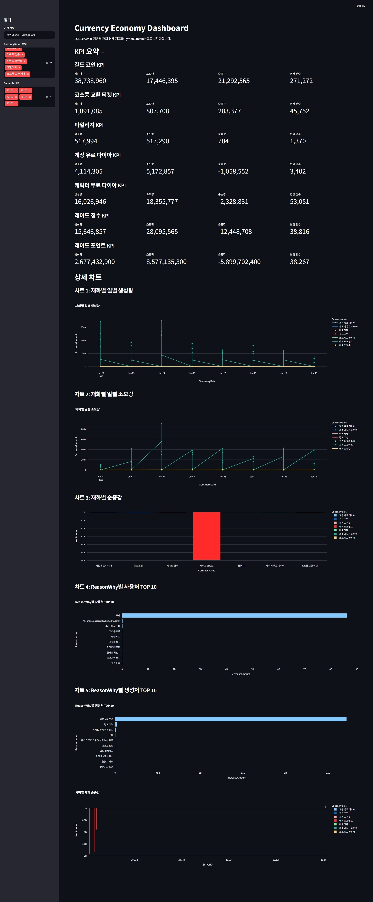

2022.04 — 현재
DATABASE ADMINISTRATOR
허세원
DBA라이브 서비스 운영부터
게임 콘텐츠 데이터베이스 설계까지.
SQL Server 기반 게임 DB의 운영·장애 대응·서버 통합과 테이블·저장 프로시저 개발을 수행했습니다. 데이터의 귀속과 상태 전이, 변경 조건을 검토하고 게임 서버와 DB의 처리 규칙을 함께 설계합니다.
CORE
SQL Server · T-SQL · AWS
OPERATIONS
Grafana · Log Shipping · PITR
DATA ENGINEERING
Python · ETL · DW / DM
01 / EXPERIENCE
경력
DBA
2021.11 — 2022.02
모히또게임즈
대항해시대·주사위의 신·히어로볼 라이브 점검과 CS 데이터 처리. AWS RDS 모니터링 및 ASP 운영 도구의 지표·로그 조회 화면 유지보수.
2020.03 — 2021.09
인터플렉스
Oracle EBS 11 인사·생산 모듈과 Oracle Forms 유지보수. 고객사 코드·제품 QR Rule 중복 관리 기능을 PL/SQL로 개발하고, Report Designer 생산·근태 리포트와 HTML 메일링, ERP·그룹웨어 인사 정보 연동을 구현했습니다.
2017.11 — 2018.09
에스원
고객 관리 및 보안 서비스 영업
02 / SELECTED WORK
실무 프로젝트
LIVE MMORPG · FOW GAMES
프리스톤테일M
PC 게임 IP를 모바일로 재구성한 글로벌 MMORPG 프로젝트입니다. 국가별 서비스 오픈에 참여하고 콘텐츠 DB 개발과 라이브 운영을 담당했습니다.
한국2022.09
대만2023.04
일본2024.03
담당 범위
AWS 기반 라이브·알파·리뷰 DB 환경 구성과 분리, DB 개체의 Git 변경 관리, 배포·정기 점검, 운영·QA 데이터 추출 및 보정을 수행했습니다. 기획·서버·운영팀과 입력 형식, 실패 처리, 배포 순서와 데이터 보존 기준을 협의했습니다.
운영에서 해결한 문제
문제 · 접근 · 적용01
COMPATIBILITY
서버 통합의 SQL 버전 호환성 해결
테스트에서 사용한 GET_BIT()가 실제 통합 대상인 SQL Server 2019에서 지원되지 않았습니다. 별자리 진행 상태의 병합 규칙을 분석하고, 비트 위치·마스크 테이블과 AND 연산을 사용하는 fnGetBit 함수를 구현했습니다.
적용 높은 별자리 페이지를 우선하고, 같은 페이지에서는 활성 비트를 유지하는 로직을 통합 테스트와 실제 라이브 서버 통합에 적용했습니다.
비트 마스크 테이블과 대체 함수 전체 구현
USE GameUnion;
GO
DROP TABLE IF EXISTS dbo.TBit;
GO
WITH TBit AS
(
SELECT 0 AS N, POWER(2, 0) AS [Bit]
UNION ALL
SELECT N + 1, POWER(2, N + 1)
FROM TBit
WHERE N < 25
)
SELECT N, [Bit]
INTO dbo.TBit
FROM TBit;
GO
DROP FUNCTION IF EXISTS dbo.fnGetBit;
GO
CREATE FUNCTION dbo.fnGetBit
(
@StepFlag INT,
@No INT
)
RETURNS INT
AS
BEGIN
RETURN
(
SELECT IIF([Bit] & @StepFlag <> 0, 1, 0)
FROM dbo.TBit
WHERE N = @No
);
END;
GO실제 구현 쿼리 · 비트 마스크 테이블 생성 및 SQL Server 2019 호환 함수
02
PERFORMANCE & COLLABORATION
개별 로그 호출을 일괄 저장으로 전환
아이템 습득·소모마다 호출되는 저장 프로시저의 호출량과 리소스 패턴을 Grafana에서 확인했습니다. 서버 사양을 낮춰야 하는 상황에서, 게임 서버 개발자와 버퍼링 및 DB 처리 방식을 함께 변경했습니다.
아이템 획득·소모게임 서버 메모리 누적10건 또는 10초일괄 SP 호출
적용 개별 프로시저 호출 빈도를 구조적으로 줄이고, 변경 후 호출 집중과 리소스 사용 상태를 모니터링했습니다.
순차 키 로그 테이블: 지표에서 인덱스 설정까지
CPU가 100%에 가깝게 상승한 구간에서 Batch Requests/sec 증가와 시간 열 기반 클러스터드 인덱스를 확인했습니다. OFF로 변경된 OPTIMIZE_FOR_SEQUENTIAL_KEY 설정을 원복하고 인덱스를 재구성한 뒤 CPU와 서비스 응답을 관찰했습니다.
03
RECOVERY & DATA LIFECYCLE
복구 가능한 백업과 데이터 보존 정책 운영
특정 시점 복구
Log Shipping 운영과 15분 단위 로그 백업 체인을 점검했습니다. Full·Differential·Log 순서와 연속성을 확인하고 STOPAT으로 목표 시점까지 복원했습니다.
우편 데이터 정제
최근 3개월 보존 기준에 맞춰 대상 데이터를 Heap에 옮긴 후 원본을 초기화·재적재하고, 주간 보존 정책으로 전환했습니다.
디스크 공간 반환
930GB 규모 로그 DB 정제 후 공간 반환을 위해 DBCC SHRINKFILE을 1회 수행했습니다. 정기 유지보수로 사용한 작업은 아닙니다.
콘텐츠 DB 설계와 구현
DATA MODEL · TRANSACTION · DB APICONTENT DATABASE / 01
퀘스트 시스템
메인·서브·가이드·지령서·개인의뢰·업적의 귀속 주체, 반복 가능 여부, 만료와 동시 진행 수를 분석했습니다. 데이터 소유권과 상태 전이를 기준으로 테이블과 프로시저 책임을 분리했습니다.
01. 데이터 모델과 책임 분리
| 데이터 소유권 | 테이블 | 설계 책임 |
|---|---|---|
| 캐릭터 진행 | TQuest | 캐릭터별 현재 퀘스트와 진행 수치 |
| 계정 공유 | TQuestAccount | 업적·이벤트 등 계정 단위 공유 상태 |
| 완료 이력 | TQuestComplete | OwnerType으로 귀속 주체를 구분한 완료 이력 |
| 의뢰 목록 | TQuestRequestGroupTQuestRequest | 갱신 횟수·목록·초기화 시각 관리 |
현재 상태 검증완료 상태 변경중복 완료 검증보상·아이템 반영COMMIT
02. 변경 조건과 트랜잭션
아이템 변경 시 고유 ID뿐 아니라 서버가 알고 있는 이전 수량을 JOIN 조건에 포함했습니다. DB 현재 값이 다르면 해당 행은 변경되지 않으며, 이후 건수 검증과 오류 처리로 이어집니다.
- 원자적 변경
- 아이템 차감과 퀘스트 수락, 완료 상태와 보상처럼 함께 성공해야 하는 작업을 명시적 트랜잭션에 포함했습니다.
- 실패 처리
- XACT_ABORT ON, TRY/CATCH, CATCH의 rollback을 사용했습니다. 오류 번호를 OUTPUT에 설정하고 TProcedureError에 기록한 뒤 다시 THROW하는 구조입니다.
UPDATE A
SET A.StackCount = B.StackCount
FROM dbo.TItem A
JOIN @JsonTable B
ON A.ItemUniqueID = B.ItemUniqueID
AND A.StackCount = B.PrevStackCount
WHERE B.DBFlag = 2;실제 구현 코드 발췌 · 이전 값 조건을 포함한 UPDATE
JSON 파싱 → 조건부 UPDATE → 건수 검증 → COMMIT / ROLLBACK
아래 코드는 JSON 입력과 변경 검증 규칙을 연결한 설명용 재구성 예시입니다. 원본 전체 프로시저는 아니며, 변수명·검증용 오류 50000·트랜잭션 골격을 예시로 구성했습니다. 실제 코드의 오류 기록·OUTPUT 및 나머지 DML 경로는 생략했습니다.
-- 설명용 재구성: 아이템 UPDATE 경로만 표현
-- @ItemJson은 프로시저 입력 파라미터를 가정합니다.
-- 원본 프로시저 전체 또는 즉시 실행용 스크립트가 아닙니다.
SET XACT_ABORT ON;
DECLARE @JsonTable TABLE
(
ItemUniqueID BIGINT,
ItemTemplateID INT,
StackCount INT,
DBFlag INT,
PrevStackCount INT
);
DECLARE @ExpectedCount INT;
DECLARE @AppliedCount INT;
BEGIN TRY
BEGIN TRANSACTION;
-- 1. JSON 입력을 자료형이 지정된 행 집합으로 변환
INSERT INTO @JsonTable
SELECT ItemUniqueID, ItemTemplateID,
StackCount, DBFlag, PrevStackCount
FROM OPENJSON(@ItemJson)
WITH
(
ItemUniqueID BIGINT '$.uid',
ItemTemplateID INT '$.tid',
StackCount INT '$.sc',
DBFlag INT '$.flag',
PrevStackCount INT '$.psc'
);
-- 2. 변경 대상으로 전달된 입력 건수
SELECT @ExpectedCount = COUNT(*)
FROM @JsonTable
WHERE DBFlag = 2;
-- 3. 서버가 전달한 이전 값과 DB 현재 값이 같을 때만 변경
UPDATE A
SET A.StackCount = B.StackCount
FROM dbo.TItem A
JOIN @JsonTable B
ON A.ItemUniqueID = B.ItemUniqueID
AND A.StackCount = B.PrevStackCount
WHERE B.DBFlag = 2;
SET @AppliedCount = @@ROWCOUNT;
-- 4. 입력 대비 누락을 감지하고 전체 변경을 되돌림
IF @AppliedCount <> @ExpectedCount
THROW 50000, N'입력 건수와 변경 건수가 다릅니다.', 1;
COMMIT TRANSACTION;
END TRY
BEGIN CATCH
IF XACT_STATE() <> 0
ROLLBACK TRANSACTION;
THROW;
END CATCH;처리 규칙 재구성 · JSON 키와 자료형 및 이전 값 UPDATE 조건은 원문 기준.
03. 서버 이벤트에 맞춘 DB API
| 프로시저 | 서버 호출 시점 | DB 처리와 검증 |
|---|---|---|
spQuestList | 캐릭터 로그인 | 계정·캐릭터 목록 UNION 조회 · READ UNCOMMITTED |
spQuestAcceptHero | 메인·서브·가이드·의뢰 수락 | 진행 행 INSERT / UPDATE · 완료 상태와 기존 행 확인 |
spQuestAcceptAccount | 업적·이벤트 지급 | JSON 목록 일괄 반영 · 계정 공유와 중복 확인 |
spQuestAcceptMission | 지령서 아이템 사용 | 아이템 차감과 수락을 같은 트랜잭션으로 처리 |
spQuestProcess | 서버에서 1분마다 | 계정·캐릭터 진행 UPDATE · 입력 수와 반영 수 비교 |
spQuestComplete | 퀘스트 완료 | 중복 완료 확인 · 이력·재화·경험치·아이템 반영 |
spQuestGiveUp | 포기 요청 | 포기 가능 유형 확인 후 진행 행 삭제 |
spQuestRequestReset | 갱신 또는 초기화 | 이전 재화 값 검증 · 차감 및 의뢰 목록 교체 |
innerJsonItem | 완료·보상 내부 호출 | DBFlag에 따른 아이템 INSERT / UPDATE / DELETE 공통화 |
04. 진행 정보의 입력 계약과 반영 건수 검증
QUEST INPUT
iqi → InitialQuestID / INTpfc → PerformingCount / INTias → IsAccountShared / BIT
- 계정·캐릭터 변경의 누락 확인
- 입력된 진행 정보는 귀속 주체에 따라 서로 다른 테이블에 반영됩니다. 입력 건수에서 각 UPDATE의 반영 건수를 차감하고, 남은 건수가 0이 아니면 오류 50046을 발생시킵니다.
DECLARE @ResultCount INT = @@ROWCOUNT;
-- 계정 · 캐릭터 UPDATE 뒤 각각 차감
SET @ResultCount -= @@ROWCOUNT;
IF @ResultCount <> 0
THROW 50046, N'퀘스트 업데이트 실패', 1;실제 구현의 검증 구문 발췌 · 입력 적재와 계정·캐릭터 UPDATE 본문은 생략되어 있으며, 차감 구문은 각 UPDATE 직후에 위치합니다.
목록 조회의 READ UNCOMMITTED는 커밋 전 데이터를 읽을 수 있습니다. 지령서·의뢰의 길드 기능은 당시 구현 범위에 포함되지 않았습니다.
CONTENT DATABASE / 02
점령전 시스템
점수·순위 계산과 캐릭터별 보상 지급이 서로 다른 DB에서 이뤄지는 콘텐츠입니다. 신청부터 월·분기 정산까지의 호출 순서와 데이터 전달 규칙을 정의했습니다.
UserDB
참가 · 결과 · 랭킹
신청과 진영 배정
일반·시즌 점수 누적
서버 그룹별 순위 계산
GAME SERVER
대상 확인 · 전달
참가자·랭킹 조회
캐릭터의 GameDB 식별
보상 프로시저 호출
GameDB
정산 · 우편 · 아이템
월·시즌 랭킹 반영
수령 상태 검증
점수 및 랭킹 보상 지급
월~목 / 신청시작 전날 / 진영 배정금요일 22시 / 점령전종료 후 / 결과·랭킹
01. 신청부터 랭킹 갱신까지
| UserDB 프로시저 | 처리 시점 | 처리 책임 |
|---|---|---|
spFactionWarRegisterspFactionWarRegisterList | 월~목 신청 기간 | 시작 시각·계정 기준 기존 신청 여부 확인 및 목록 반환 |
spFactionWarUnionCheck | 시작 전날 · 진영당 1회 | 진영별 Hero 목록을 받아 UnionID 반영 |
spFactionWarResult | 점령전 종료 · 진영별 호출 | 일반·시즌 점수 누적 및 점수 로그 저장 |
spFactionWarPersonalScorespFactionWarPersonalScoreList | 종료 / 최근 점수 조회 | 몬스터·타워·게이트·성 점수 저장과 반환 |
spFactionWarWinnerspFactionWarWinnerList | 종료 / 승리 진영 조회 | 서버 그룹별 최종 진영 점수 저장 및 1위 반환 |
spFactionWarRankUpdatespFactionWarRank | 결과 반영 이후 | spFactionWarResult 이후 서버 그룹별 일반(1)·시즌(2) 랭킹 재계산 및 반환 |
spFactionWarScoreInit | 월·분기 초기화 | Flag 1: 일반 점수 / Flag 2: 일반·시즌 점수 초기화 |
02. GameDB 정산과 보상
| GameDB 프로시저 | 호출 시점 | 처리 책임 |
|---|---|---|
spFactionWarScoreReward | 점령전 종료 후 | 참가 Hero와 보상 정보를 받아 각 GameDB 우편 시스템으로 점수 보상 지급 |
spFactionWarRankInit | 월·시즌 00시 | 해당 GameDB의 Hero 랭킹을 전달받아 일반·시즌 랭킹 정산 |
spFactionWarRankReward | 랭킹 보상 수령 | HeroUniqueID·RankType·RankTime·IsReward 조건 확인 후 아이템 지급 |
MONTHLY / InitFlag 1
일반 랭킹 정산
RankTime은 랭킹 집계 시각이며 월·시즌 초기화 시각과 같은 의미로 사용합니다. 전달받은 일반 랭킹을 반영하고 해당 행의 IsReward를 0으로 설정했습니다.
SEASON / InitFlag 2
일반·시즌 랭킹 재적재
기존 GameDB 랭킹을 지운 뒤 전달받은 일반·시즌 랭킹을 다시 적재했습니다.
REWARD GUARD
수령 상태 변경 결과로 보상 지급 여부 결정
HeroUniqueID + RankType + RankTime으로 대상을 식별하고 IsReward = 0인 행만 1로 변경했습니다. 반영된 행이 없으면 오류 50126을 반환하고 아이템을 지급하지 않습니다.
03 / PERSONAL PROJECTS
개인 프로젝트
개인 프로젝트
게임 재화 ETL & 대시보드
재화 변경 로그를 분석 가능한 구조로 바꾸고, 생성·소모·순증감을 탐색할 수 있는 데이터 파이프라인을 구현했습니다.
- 생성량 · 소모량 · 순증감
- 선택한 기간의 재화 흐름을 요약하고 시간에 따른 변화를 확인합니다.
- 서버별 비교
- 기간·재화·서버 필터로 대상 범위를 좁혀 변화량과 상세 데이터를 탐색합니다.
- 생성처 · 사용처 TOP 10
- ReasonWhy 기준으로 유입·소모가 발생한 사유를 구분해 살펴봅니다.

데이터 계층과 적재 설계
| 계층 | 데이터와 처리 | 설계 의도 |
|---|---|---|
| Raw | SQL Server · CSV · JSON | 서로 다른 입력을 공통 컬럼으로 정규화 |
| Python ETL | 필수 컬럼 검증 · CreateDate 증분 추출 | DW의 마지막 적재 시각 이후 데이터 조회 |
| DW Fact | BeforeAmount · AfterAmount · 계산 열 ChangeAmount | 변경 이력을 보존하고 변화량 분석 단순화 |
| Data Mart | 일별 · 서버별 · 재화별 · 사유별 집계 | 탐색에 필요한 집계를 별도 계층으로 구성 |
| View / Dashboard | 단일 View 조회 · Streamlit / Plotly | 시각화 계층의 DB 의존성 축소 |
BATCH LOAD
pyodbc의 fast_executemany로 Fact 테이블에 배치 입력하고 성공 시 commit, 오류 시 rollback하도록 구성했습니다. 원천 SQL Server와 분석용 DW / DM을 별도 계층으로 분리했습니다.
개인 프로젝트
증빙 이미지 병합 자동화
여러 JPG를 열어 수작업으로 배치하던 과정을 폴더 입력 한 번으로 줄이기 위해 만든 Python 도구입니다.
폴더 내 JPG를 수집하고 최소 이미지 크기에 맞춰 리사이즈한 뒤, 6열 격자로 병합·저장했습니다. PyInstaller로 실행 파일을 구성해 그룹웨어 도입 전까지 개인 도구로 사용했습니다.
구현 범위: JPG 입력, 6열·4행 기준 캔버스. 다른 확장자, 빈 폴더·손상 이미지 처리와 GUI는 포함하지 않았습니다.
이미지 수집·리사이즈·격자 병합 코드
files = glob.glob(Image_path + "*.jpg")
images = [Image.open(file) for file in files]
x_min = min(image.size[0] for image in images)
y_min = min(image.size[1] for image in images)
resized = [
image.resize((x_min, y_min))
for image in images
]
result = Image.new("RGB", canvas_size, (255, 255, 255))
for index, image in enumerate(resized):
x = (index % 6) * x_min
y = (index // 6) * y_min
result.paste(image, (x, y))
result.save(output_file)실제 구현 코드 발췌. 경로·캔버스 크기·출력 파일 변수는 외부에서 설정합니다.
04 / BACKGROUND
학력 및 자격
Education
한양사이버대학교
컴퓨터공학과 · 학사 졸업
안산대학교
글로벌 IT 비즈니스 · 전문학사 졸업
Certifications
SQLD · SQL 개발자
한국데이터산업진흥원
리눅스마스터 2급
한국정보통신진흥협회